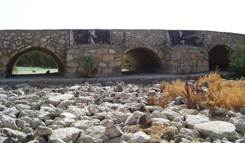

Puente romano de Socuéllamos
Puente de origen romano
reconstruido. Se conoce como Puente del Molino de la Torre. Está emplazado sobre el río Záncara.
Su fábrica es de piedra y tiene tres ojos de igual tamaño y uno menor que no
puede verse porque está cegado. Se conservan restos, sobre el puente y accesos,
de una calzada romana de aproximadamente cinco metros de ancha. La calzada unía
las ciudades de Complutum y Cartagonova. También existía un miliario.
|
 |
| PUENTES ROMANOS | CIUDAD REAL ROMANA |